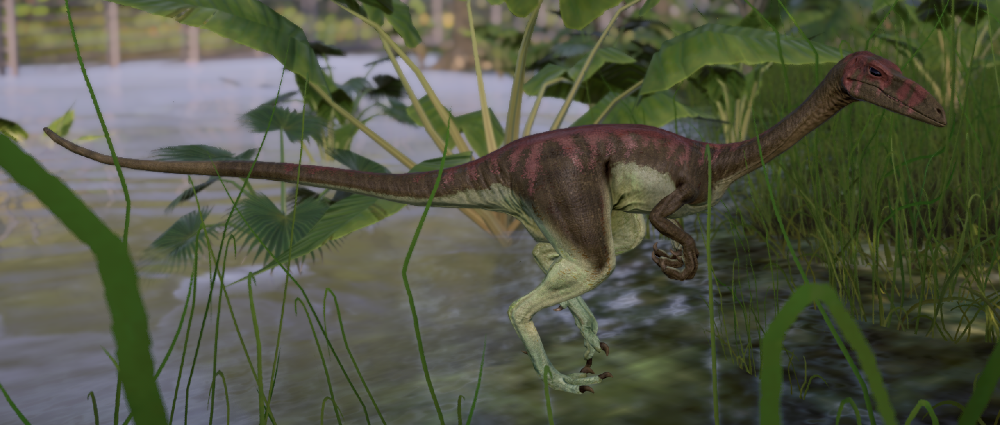

O Segissauro é um comedor de carne do Jurássico Inferior adaptado para a vida em um ambiente seco e arenoso. Embora todos os primeiros dinossauros predadores tenham evoluído para serem mais rápidos do que os animais que substituíram, os cientistas acreditam que o Segissauro possua características que o torna ainda mais rápido.